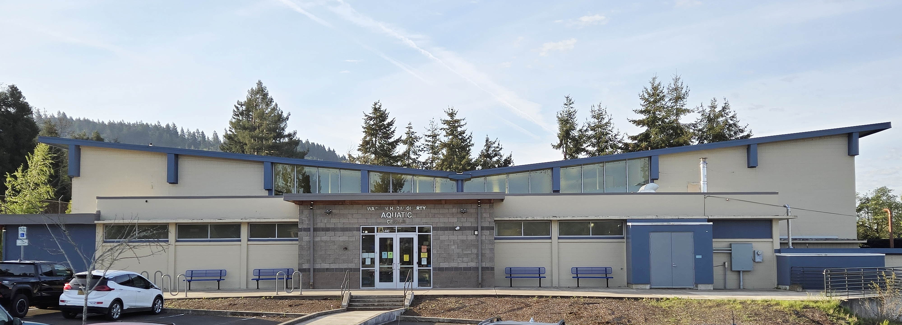
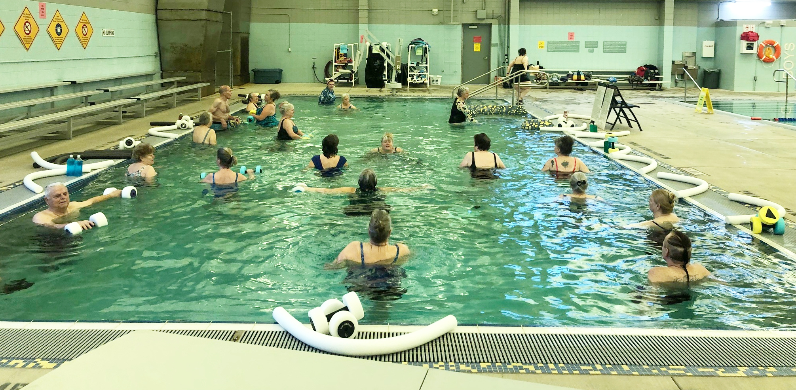
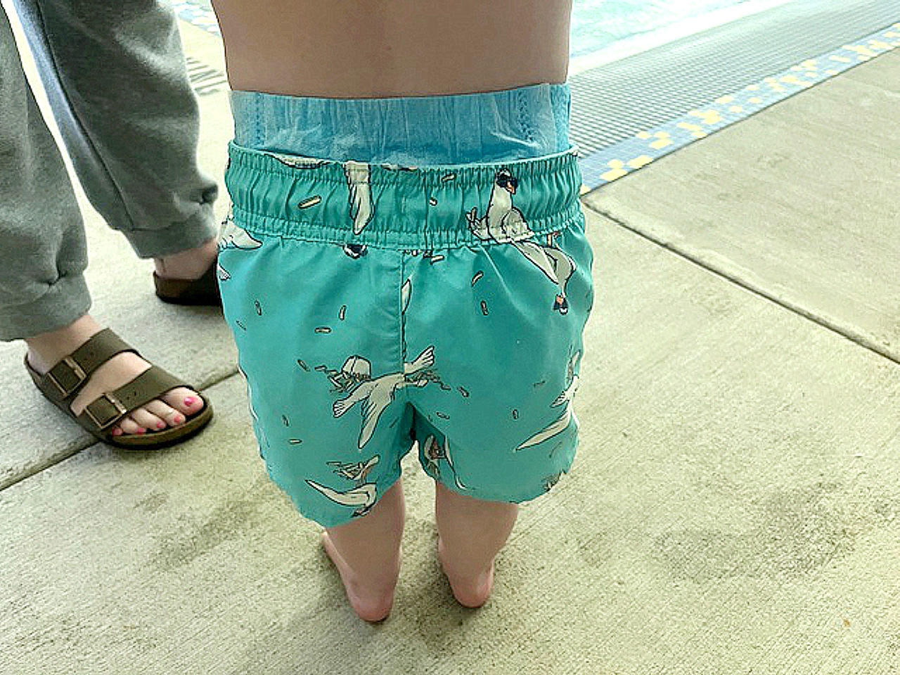
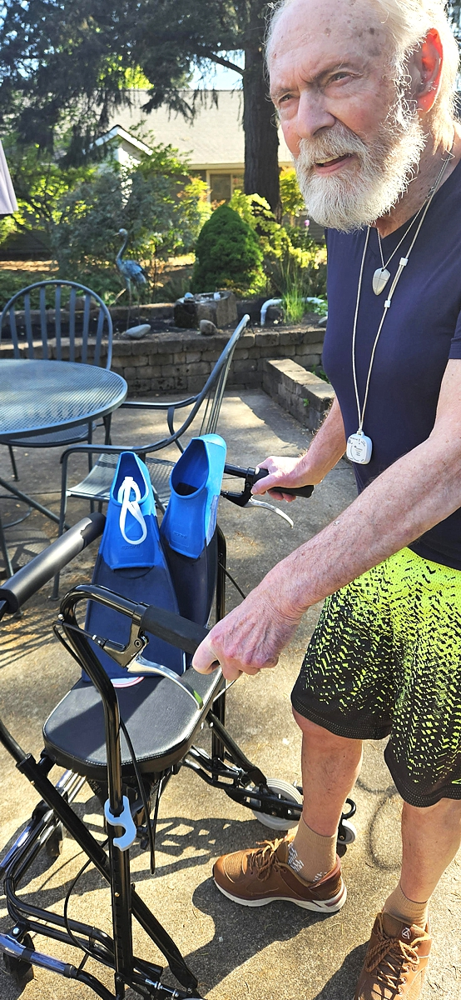
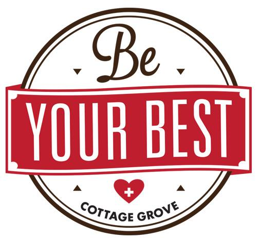

70+ years
of community pool access at WDAC
About Friends of the WDAC
Friends of the WDAC
Community patrons and supporters advocating for access, excellence, and long-term sustainability.
300+ supporters
of WDAC and its community programs
$7,000 in 2025
given for deck equipment and lane lines
Who we are
We are 300-plus patrons and supporters of the Warren Daugherty Aquatic Center (WDAC) and its community programs, including exercise classes, swim lessons, independent lap swim and exercise, and family recreation.
We formed in spring 2025 to advocate for WDAC community programs as the City of Cottage Grove faced a budget deficit. With continued and growing city budget pressures, fiscal support for WDAC community programs remains at risk.
In January 2026, our group formalized by signing a fiscal sponsorship agreement with Be Your Best (BYB). As a sponsored project of BYB, Friends of the WDAC has nonprofit status. Learn more about our sponsor below.
WDAC site: South Lane School District - WDAC
Mission
Consistent with the mission of Be Your Best, the purpose of Friends of the WDAC is to promote the health and wellbeing of residents by ensuring the continuing excellence and availability of community programs at the aquatic center.
Objectives
- Establish and maintain an association of patrons and supporters of the WDAC.
- Advocate for effective partnership between the South Lane School District and the City of Cottage Grove.
- Raise funds, provide information, and offer assistance for the benefit of WDAC community programs.
- Fund program, equipment, and capital needs outside regular WDAC operational and maintenance expenditures.
Leadership
Steering Committee
- Andrew Elliott, Co-Chair
- Gail Hemsoth, Co-Chair
- Joyce Settelmeyer, Treasurer and BYB Liaison
- Stephenie Wheeler, Secretary
- Suzanne Huebner-Sannes, Senior Center Liaison
- Ellen Bridges, Aqua Exercise Liaison
Advisors
- Samantha Duncan, BYB Coordinator
- Patrick Russell, CGHS Alumni Liaison

Protecting a vital community asset
Just like Cottage Grove community parks, the aquatic center offers affordable, wholesome recreation for residents of all ages (from babies to elders) and socio-economic means. Hundreds of local seniors and families use the WDAC, many of whom have few options.
Why it matters
Swimming and aqua-based exercise supports children, pregnant women, people with disabilities, athletes, seniors, and everyone in between - improving strength, balance, mobility, and overall wellbeing, often with few other exercise options.




What people say
Selected from WDAC patron and professional testimonials.
Download the testimonials PDFAs a massage therapist, I have experienced for myself how huge of an impact water fitness has on improved mobility...
Swimming is a sport that can last a lifetime.
Therapy pool classes become a place to connect with community, which is good medicine for our mental health.

Be Your Best - Our Sponsor
Be Your Best addresses community health through collective action focused on social determinants of health - the conditions in which people are born, grow, live, work, and age.
BYB background
- Formed in 2013 as an informal collective; achieved nonprofit status in 2021.
- Major success in 2024: opening of a low-cost rural health center, the South Lane Clinic at 1275 S. River Road in Cottage Grove.
Learn more: Chronicle article (online) - Chronicle PDF (download)
Leadership + contact
- Samantha Duncan, Coordinator
- Email: beyourbest.cg@gmail.com
- BYB Facebook page